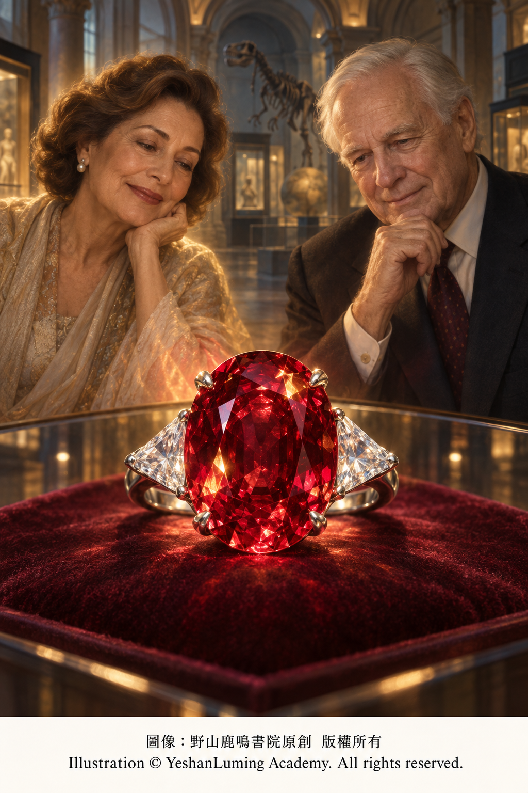

卡門·露西亞紅寶石 · 璀璨切面下的未了情The Carmen Lúcia Ruby · A Love That Never Ended Beneath Its Brilliant Facets
The World of Gemstones · Ruby SeriesThe Carmen Lúcia Ruby · A Love That Never Ended Beneath Its Brilliant Facets
The World of Gemstones · Ruby Series卡門·露西亞紅寶石 · 璀璨切面下的未了情
寶石世界·紅寶石篇
寶石世界·紅寶石篇（111）The World of Gemstones · Ruby Series (111)
在探尋全球傳奇紅寶石的旅程中，我們往往會被紅寶石背後的帝王權謀、血腥掠奪，或拍賣場上的天價競逐所吸引。
然而，在美國華盛頓特區的史密森尼國家自然歷史博物館內，珍藏著一顆身世完全不同的著名紅寶石。它沒有顯赫王朝留下的權力印記，也沒有驚心動魄的爭奪歷史。它真正打動人心的，是一位丈夫對亡妻深沉的懷念，以及一個未能在生命中完成的美麗願望。
這就是重達23.10克拉的「卡門·露西亞紅寶石」（Carmen Lúcia Ruby）。
這顆紅寶石產自緬甸莫谷，開採於20世紀30年代。它具有濃郁飽和的紅色、優異的透明度，以及比例勻稱的橢圓形混合切工，是史密森尼國家寶石收藏中最大的刻面紅寶石，也是目前已知最優美的大型刻面緬甸紅寶石之一。
對任何一顆高品質紅寶石而言，重量、顏色與透明度都非常重要，然而三者往往難以同時達到理想狀態。
紅寶石中的致色元素鉻，在賦予剛玉美麗紅色的同時，也容易造成晶格應力，增加晶體產生裂隙的可能。因此，顏色鮮豔、透明度良好而且重量巨大的天然紅寶石，遠比普通紅寶石更加罕見。
卡門·露西亞紅寶石重達23.10克拉，卻依然保持濃郁均勻的紅色與出色的透明度。精心設計的切面讓光線在寶石內部充分反射，使整顆紅寶石散發出明亮而生動的紅色光芒。
但是，這顆紅寶石最令人難忘的地方，並不只是它的重量與美麗。它真正的故事，始於一位出生在巴西的女性——卡門·露西亞·巴克（Carmen Lúcia Buck）。
卡門熱愛珠寶，也長期關心慈善事業。她尤其關注醫學研究、老年人的生活，以及巴西兒童的成長與未來。對她而言，美麗並不只是供少數人收藏和欣賞的奢侈品，也可以成為分享、紀念與關懷他人的方式。
她的丈夫彼得·巴克博士（Dr. Peter Buck）是一位物理學家、企業家和慈善家。他早年從事核物理相關工作，後來因投資並共同創立連鎖餐飲企業而取得巨大成功。
2002年前後，珠寶商弗蘭克·卡皮耶洛（Frank Cappiello）得知，一顆長期由私人收藏的頂級緬甸紅寶石可能即將進入市場。卡門知道這個消息後，對它十分嚮往。
當時，她正在與癌症抗爭。她希望自己有一天能夠戰勝疾病，並以得到這顆紅寶石來慶祝生命重新開始。
在探尋全球傳奇紅寶石的旅程中，我們往往會被紅寶石背後的帝王權謀、血腥掠奪，或拍賣場上的天價競逐所吸引。
然而，在美國華盛頓特區的史密森尼國家自然歷史博物館內，珍藏著一顆身世完全不同的著名紅寶石。它沒有顯赫王朝留下的權力印記，也沒有驚心動魄的爭奪歷史。它真正打動人心的，是一位丈夫對亡妻深沉的懷念，以及一個未能在生命中完成的美麗願望。
這就是重達23.10克拉的「卡門·露西亞紅寶石」（Carmen Lúcia Ruby）。
這顆紅寶石產自緬甸莫谷，開採於20世紀30年代。它具有濃郁飽和的紅色、優異的透明度，以及比例勻稱的橢圓形混合切工，是史密森尼國家寶石收藏中最大的刻面紅寶石，也是目前已知最優美的大型刻面緬甸紅寶石之一。
對任何一顆高品質紅寶石而言，重量、顏色與透明度都非常重要，然而三者往往難以同時達到理想狀態。
紅寶石中的致色元素鉻，在賦予剛玉美麗紅色的同時，也容易造成晶格應力，增加晶體產生裂隙的可能。因此，顏色鮮豔、透明度良好而且重量巨大的天然紅寶石，遠比普通紅寶石更加罕見。
卡門·露西亞紅寶石重達23.10克拉，卻依然保持濃郁均勻的紅色與出色的透明度。精心設計的切面讓光線在寶石內部充分反射，使整顆紅寶石散發出明亮而生動的紅色光芒。
但是，這顆紅寶石最令人難忘的地方，並不只是它的重量與美麗。它真正的故事，始於一位出生在巴西的女性——卡門·露西亞·巴克（Carmen Lúcia Buck）。
卡門熱愛珠寶，也長期關心慈善事業。她尤其關注醫學研究、老年人的生活，以及巴西兒童的成長與未來。對她而言，美麗並不只是供少數人收藏和欣賞的奢侈品，也可以成為分享、紀念與關懷他人的方式。
她的丈夫彼得·巴克博士（Dr. Peter Buck）是一位物理學家、企業家和慈善家。他早年從事核物理相關工作，後來因投資並共同創立連鎖餐飲企業而取得巨大成功。
2002年前後，珠寶商弗蘭克·卡皮耶洛（Frank Cappiello）得知，一顆長期由私人收藏的頂級緬甸紅寶石可能即將進入市場。卡門知道這個消息後，對它十分嚮往。
當時，她正在與癌症抗爭。她希望自己有一天能夠戰勝疾病，並以得到這顆紅寶石來慶祝生命重新開始。

Click to enlarge
然而，命運沒有讓她等到這一天。2003年，卡門·露西亞因病去世。那顆她曾經嚮往的紅寶石，最終沒有來得及戴在她的手上。
妻子去世後，彼得·巴克並沒有忘記她的願望。他決定以另一種方式，讓這顆紅寶石與卡門的名字永遠聯繫在一起。
他向史密森尼學會提供資金，協助國家自然歷史博物館從私人收藏中取得這顆珍貴的紅寶石。2004年，這顆紅寶石正式進入史密森尼國家寶石收藏，並被命名為「卡門·露西亞紅寶石」，以紀念卡門·露西亞·巴克。
這個安排，使一個原本屬於私人世界的願望，轉化成了一份可以由所有人共享的公共財富。
卡門生前未能擁有這顆紅寶石；但是在她去世之後，它卻以她的名字留在了世界上。每一位走進史密森尼博物館的觀眾，都可以站在展櫃前欣賞它，也可以從它的名字中，瞭解那位受到永久紀念的女性。
今天，卡門·露西亞紅寶石被鑲嵌在一枚鉑金戒指上，主石兩側各配有一顆三角形鑽石。潔白明亮的鑽石不僅襯托出中央紅寶石的濃郁色彩，也使整件珠寶呈現出莊重而平衡的美感。
從寶石學角度來看，這顆紅寶石的非凡之處，首先在於它罕見的巨大體量。在如此龐大的克拉重量下，它仍然具有優異的透明度、飽滿的紅色，以及足以充分展現其美感的精良切工。
它的橢圓形混合切工結合了冠部與亭部不同形式的刻面。光線進入寶石之後，在內部反射並重新返回觀察者眼中，使濃郁的紅色顯得更加明亮，而且富有生命力。
與那些顏色過深、光線難以返回，或者內部裂隙過多的紅寶石相比，卡門·露西亞紅寶石最令人讚嘆的，正是重量、顏色、透明度與切工之間難得的平衡。
作為天然紅寶石，它所屬的剛玉礦物具有莫氏硬度9，折射率通常約為1.762—1.770，雙折射約為0.008，相對密度約為4.00。紅寶石中的鉻元素不僅形成紅色，在適當條件下還能產生紅色螢光，使寶石呈現出彷彿由內部發出的鮮活光彩。
不過，對這顆寶石而言，任何物理數據都不能完全說明它的價值。大自然用了漫長的地質年代孕育出這顆紅寶石，人類則用愛與思念，賦予了它另一層永遠無法由科學儀器測量的意義。
如果這顆紅寶石只是再次進入私人收藏，被鎖進某一座保險庫，它或許仍然是一顆舉世罕見的紅寶石；但是，當彼得·巴克以亡妻的名字促成史密森尼收藏這顆寶石時，它便不再只是某個人的私人財產。
它成為了一份公開的紀念，也成為無數陌生人都可以共同欣賞的美麗。
卡門·露西亞紅寶石的故事，是大自然地質奇蹟與人類深厚情感的一次交融。它向世人展示了緬甸莫谷紅寶石所能達到的非凡境界，也使一段原本只屬於夫妻二人的私人感情，轉化成一份留給整個世界的永久紀念。
卡門未能在生命中擁有和佩戴這顆紅寶石，但她的名字，卻從此與它璀璨的紅光一起，長久地留在了人間。
卡門·露西亞紅寶石主要資料
名稱： 卡門·露西亞紅寶石
英文名稱： Carmen Lúcia Ruby
寶石種類： 天然紅寶石
重量： 23.10克拉
產地： 緬甸莫谷
開採年代： 20世紀30年代
切工： 橢圓形混合切工
鑲嵌形式： 鉑金戒指，兩側配有三角形鑽石
入藏時間： 2004年
捐贈者： 彼得·巴克博士
命名緣由： 紀念其亡妻卡門·露西亞·巴克
收藏地： 美國史密森尼國家自然歷史博物館
（未完待續）
As we journey through the world of legendary rubies, we are often captivated by the imperial intrigues, bloody plunder, and fierce battles over astronomical prices at auction that lie behind these precious stones.
Yet within the Smithsonian National Museum of Natural History in Washington, D.C., rests a celebrated ruby with a very different story. It bears no imprint of power left by an illustrious dynasty, nor does it carry a history of dramatic conflict and struggle. What makes it truly moving is a husband’s profound remembrance of his late wife—and a beautiful wish she was unable to fulfill in her lifetime.
This is the 23.10-carat Carmen Lúcia Ruby.
Mined in the Mogok region of Myanmar during the 1930s, the ruby possesses a richly saturated red color, exceptional transparency, and a beautifully proportioned oval mixed cut. It is the largest faceted ruby in the Smithsonian’s National Gem Collection and one of the finest large, faceted Burmese rubies known today.
For any fine ruby, weight, color, and transparency are all critically important. Yet it is exceedingly difficult for all three qualities to reach an ideal level within a single stone.
Chromium, the coloring element that gives corundum its beautiful red hue, can also create stress within the crystal lattice, increasing the likelihood of fractures developing in the crystal. For this reason, natural rubies that combine vivid color, excellent transparency, and exceptional size are far rarer than ordinary rubies.
Although the Carmen Lúcia Ruby weighs an extraordinary 23.10 carats, it still retains a richly uniform red color and remarkable transparency. Its carefully designed facets allow light to reflect efficiently within the stone, giving the entire ruby a bright and vibrant red radiance.
But the most unforgettable quality of this ruby lies in more than its size and beauty. Its true story begins with a Brazilian-born woman named Carmen Lúcia Buck.
Carmen loved jewelry and remained deeply committed to charitable causes throughout her life. She was particularly concerned with medical research, the welfare of older people, and the growth and future of children in Brazil. To her, beauty was not merely a luxury to be collected and admired by a privileged few. It could also become a means of sharing, remembrance, and caring for others.
Her husband, Dr. Peter Buck, was a physicist, entrepreneur, and philanthropist. Early in his career, he worked in the field of nuclear physics. He later achieved tremendous success by investing in and co-founding a restaurant chain.
Around 2002, jeweler Frank Cappiello learned that an exceptional Burmese ruby, long held in a private collection, might soon become available. When Carmen heard the news, she greatly longed to possess it.
At the time, she was battling cancer. She hoped that one day she would overcome the disease and acquire the ruby as a celebration of life beginning anew.
As we journey through the world of legendary rubies, we are often captivated by the imperial intrigues, bloody plunder, and fierce battles over astronomical prices at auction that lie behind these precious stones.
Yet within the Smithsonian National Museum of Natural History in Washington, D.C., rests a celebrated ruby with a very different story. It bears no imprint of power left by an illustrious dynasty, nor does it carry a history of dramatic conflict and struggle. What makes it truly moving is a husband’s profound remembrance of his late wife—and a beautiful wish she was unable to fulfill in her lifetime.
This is the 23.10-carat Carmen Lúcia Ruby.
Mined in the Mogok region of Myanmar during the 1930s, the ruby possesses a richly saturated red color, exceptional transparency, and a beautifully proportioned oval mixed cut. It is the largest faceted ruby in the Smithsonian’s National Gem Collection and one of the finest large, faceted Burmese rubies known today.
For any fine ruby, weight, color, and transparency are all critically important. Yet it is exceedingly difficult for all three qualities to reach an ideal level within a single stone.
Chromium, the coloring element that gives corundum its beautiful red hue, can also create stress within the crystal lattice, increasing the likelihood of fractures developing in the crystal. For this reason, natural rubies that combine vivid color, excellent transparency, and exceptional size are far rarer than ordinary rubies.
Although the Carmen Lúcia Ruby weighs an extraordinary 23.10 carats, it still retains a richly uniform red color and remarkable transparency. Its carefully designed facets allow light to reflect efficiently within the stone, giving the entire ruby a bright and vibrant red radiance.
But the most unforgettable quality of this ruby lies in more than its size and beauty. Its true story begins with a Brazilian-born woman named Carmen Lúcia Buck.
Carmen loved jewelry and remained deeply committed to charitable causes throughout her life. She was particularly concerned with medical research, the welfare of older people, and the growth and future of children in Brazil. To her, beauty was not merely a luxury to be collected and admired by a privileged few. It could also become a means of sharing, remembrance, and caring for others.
Her husband, Dr. Peter Buck, was a physicist, entrepreneur, and philanthropist. Early in his career, he worked in the field of nuclear physics. He later achieved tremendous success by investing in and co-founding a restaurant chain.
Around 2002, jeweler Frank Cappiello learned that an exceptional Burmese ruby, long held in a private collection, might soon become available. When Carmen heard the news, she greatly longed to possess it.
At the time, she was battling cancer. She hoped that one day she would overcome the disease and acquire the ruby as a celebration of life beginning anew.
Click to enlarge
Fate, however, did not allow her to see that day. In 2003, Carmen Lúcia passed away from her illness. She never had the opportunity to wear the ruby she had so deeply admired.
After his wife’s death, Peter Buck did not forget her wish. He decided to fulfill it in another way—one that would forever connect the ruby with Carmen’s name.
He provided funds to the Smithsonian Institution, enabling the National Museum of Natural History to acquire this precious ruby from a private collection. In 2004, the stone officially entered the Smithsonian’s National Gem Collection and was named the “Carmen Lúcia Ruby” in memory of Carmen Lúcia Buck.
Through this act, a wish that had once belonged to a private world was transformed into a public treasure that everyone could share.
Carmen was never able to own this ruby during her lifetime. After her death, however, it remained in the world bearing her name. Every visitor who enters the Smithsonian can stand before its display case and admire it, while also learning about the woman whose memory it preserves.
Today, the Carmen Lúcia Ruby is mounted in a platinum ring, with a triangular diamond set on either side of the central stone. The brilliant white diamonds not only accentuate the ruby’s intensely saturated color but also lend the entire jewel a sense of dignity and harmonious balance.
From a gemological perspective, the extraordinary nature of this ruby begins with its remarkably large size. Despite its exceptional carat weight, it still possesses outstanding transparency, a rich red color, and superb cutting that allows its beauty to be fully revealed.
Its oval mixed cut combines different facet arrangements on the crown and pavilion. After light enters the stone, it reflects within the ruby and returns to the observer’s eye, making its rich red color appear brighter and more vibrant.
Compared with rubies whose color is so dark that light cannot readily return, or whose interiors contain excessive fractures, the most remarkable feature of the Carmen Lúcia Ruby is the rare balance it achieves among weight, color, transparency, and cut.
As a natural ruby, it belongs to the corundum mineral species, which has a Mohs hardness of 9, a typical refractive index of approximately 1.762–1.770, birefringence of about 0.008, and a specific gravity of approximately 4.00. The chromium in ruby not only creates its red color but, under suitable conditions, can also produce red fluorescence, giving the stone a vivid glow that seems to emanate from within.
Yet no physical measurement can fully explain the value of this ruby. Nature required immense spans of geological time to create it, while human love and remembrance endowed it with another meaning—one that no scientific instrument could ever measure.
Had this ruby simply passed into another private collection and been locked away in a vault, it would still have remained an extraordinarily rare gemstone. But when Peter Buck arranged for the Smithsonian to acquire it in his late wife’s name, the ruby ceased to be merely someone’s private possession.
It became a public memorial—and a thing of beauty that countless strangers could share.
The story of the Carmen Lúcia Ruby represents a meeting between a geological miracle of nature and the deepest emotions of the human heart. It reveals the extraordinary heights that rubies from Mogok, Myanmar, can attain, while transforming a private love once shared by a husband and wife into an enduring memorial left to the entire world.
Carmen was never able to own or wear this ruby during her lifetime, but her name has remained in the world ever since, shining alongside its brilliant red light.
Essential Information About the Carmen Lúcia Ruby
Name: Carmen Lúcia Ruby
English Name: Carmen Lúcia Ruby
Gemstone Variety: Natural ruby
Weight: 23.10 carats
Origin: Mogok, Myanmar
Period Mined: 1930s
Cut: Oval mixed cut
Setting: Platinum ring, flanked by two triangular diamonds
Year of Acquisition: 2004
Donor: Dr. Peter Buck
Origin of the Name: Named in memory of his late wife, Carmen Lúcia Buck
Current Collection: Smithsonian National Museum of Natural History, United States
(To be continued)